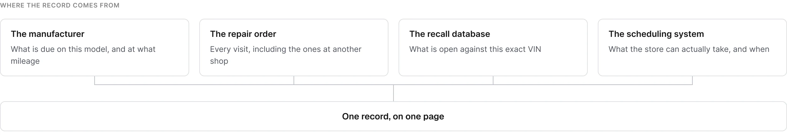
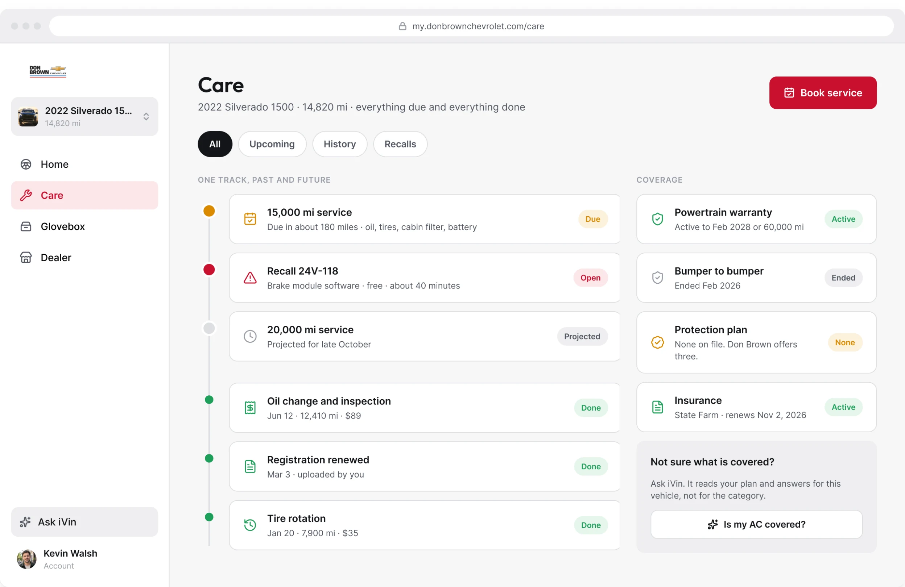
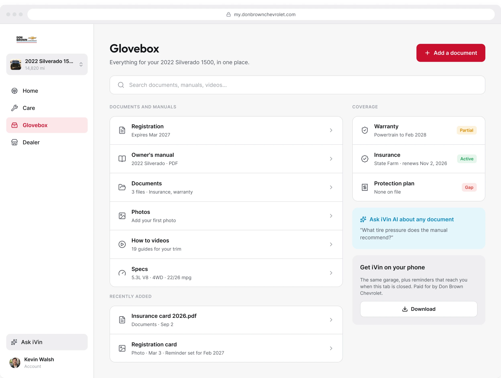
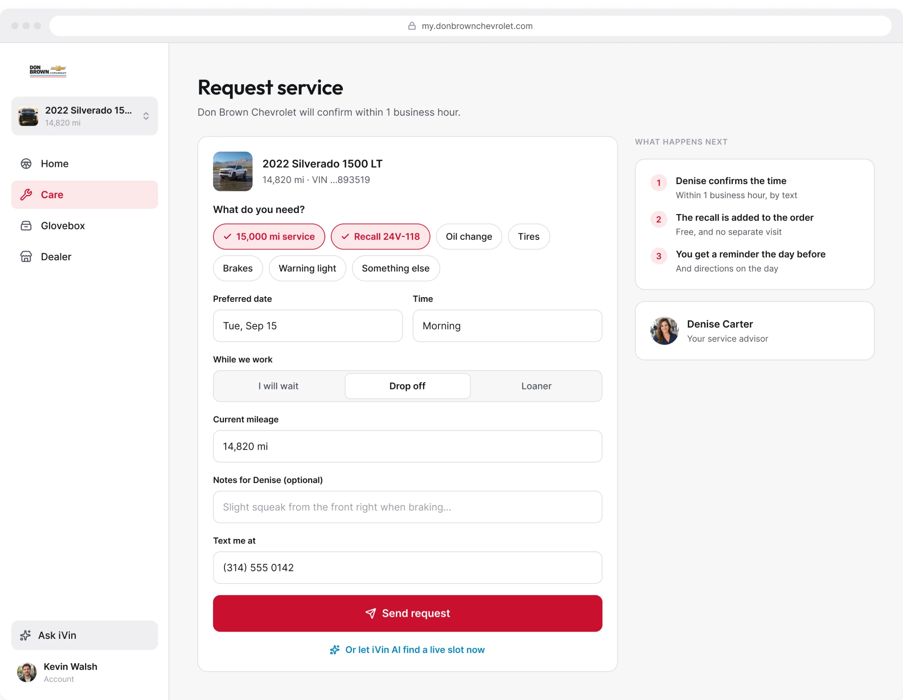
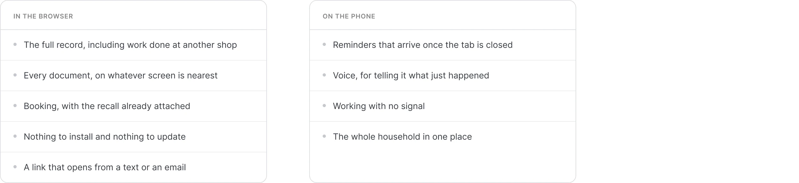

Vinsyt / Responsive web
The Owner Web App
The vehicle record and the next service action, in a browser
The owner web app is a live product. This page shows a self-initiated redesign, not a released update. I explored how its vehicle information, service history, documents, and booking could work together more clearly without requiring an app download.
Role
Product design, interaction design, UI, components, and UX writing.
Make four sources read as one record
The manufacturer's schedule explains what is due. Repair orders show what has happened. Recall data identifies open work against the VIN. The scheduling system supplies the next available visit.
Those sources remain separate behind the product, but the owner should not have to reconstruct their relationship. I used the vehicle as the organizing point, with service needs, history, and the next action connected on the page.
Four sources, one record
Manufacturer schedule, repair orders, recall data, and scheduling are read as one connected record. The same record also gives the AI assistant context, so an owner can ask about the car without first explaining its history.

Give Care and Glovebox distinct places
The distinction is between acting on the car and finding something about it. It keeps the overview from becoming a storage page for every piece of information the platform holds.
Care
Care brings upcoming work and service history together.

Glovebox
Glovebox gives documents, manuals, and vehicle information their own place, with search available in the same view.

Start booking with the vehicle already known
The booking screen begins with the selected vehicle and its context. The owner supplies what is still needed for the visit rather than re-entering the record.
I kept booking close to the service information that prompted it. The task is to arrange the visit, not translate the car's history into a new form.
Booking
A service request begins with the selected vehicle and only asks for the details still needed.

Design for the browser alongside the phone
The browser provides a route from a text or email into the vehicle record, documents, and booking. The phone app is a related experience, not a requirement for completing those browser tasks.
Two surfaces
The browser and phone divide work across surfaces while staying connected through shared patterns.

Delivery & scope
A proposed direction, not a released update
The redesign explores the vehicle overview, Care, Glovebox, and booking in Figma. It is a proposed direction for the product, not a released update.
- The live product it addresses delivered 15,551 records in the first eight months of 2026
- 7,588 of those records were opened
- The live product runs across 22 dealerships
- Responsive web. Desktop frames shown. Not built.